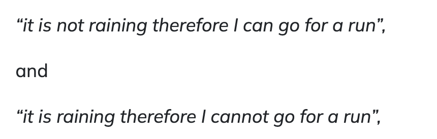
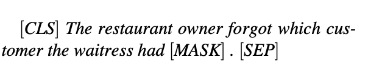
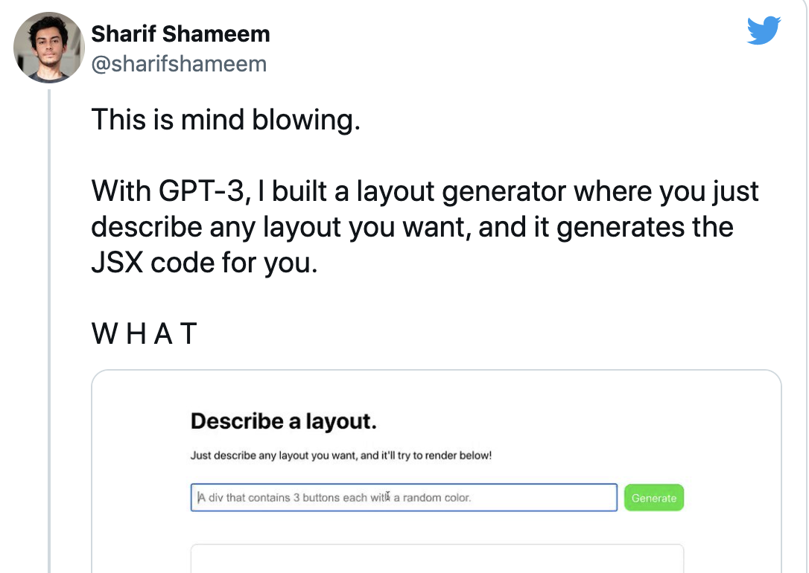

Pre-trained Models¶
a good representation should express general-purpose priors that are not task-specific but would be likely to be useful for a learning machine to solve AI-tasks.
Source: Qiu et al. 2021.
Q1. What is the good representation of language, what model shoudl capture?
The first-generation Pre-trained Models (PTM)¶
learning good word embeddings
usually very shallow for computational efficiencies (Skip-Gram,and GloVe)
can capture semantic meanings of words
context-free
Q2. Can shallow PTM capture higher-level concepts in context, such as polysemous disambiguation, syntactic structures, semantic roles, anaphora?
The top eight pre-trained language models that have accelerated natural language processing applications:
The second-generation Pre-trained Models (PTM)¶
CoVe, ELMo, OpenAI GPT and BERT
ElMo¶
Embeddings from Language Models Released 2017 by Allen NLP, ELMo is a pre-trained contextual language embedding model that models syntax and semantic of words as well as their linguistic contexts. The model has been pre-trained on a huge text-corpus and learned functions from deep bi-directional models (biLM).
Google’s BERT¶
Bidirectional Encoder Representations from Transformers
BERT - a pre-trained NLP model developed by Google in 2018 - has only been pre-trained on 2,500 million words of Wikipedia and 800 million words of Book Corpus.
Q3. Why do you think BERT outperform in sent1 and performs poor in sent2? 
Accurate prediction requires use of commonsense reasoning to infer what is being described in the first sentence, and pragmatic reasoning to determine how the second sentence relates.
BERT Evaluation¶
A cloze test (also cloze deletion test or occlusion test) is an exercise, test, or assessment consisting of a portion of language with certain items, words, or signs removed (cloze text), where the participant is asked to replace the missing language item.

BERT Evaluation - Psycholinguistic diagnostics
GLue Benchmark¶
The General Language Understanding Evaluation
(GLUE) benchmark is a collection of resources for training, evaluating, and analyzing natural language understanding systems.
Q4. Explore Glue Benchmark
A benchmark of nine sentence- or sentence-pair language understanding tasks built on established existing datasets and selected to cover a diverse range of dataset sizes, text genres, and degrees of difficulty,
A diagnostic dataset designed to evaluate and analyze model performance with respect to a wide range of linguistic phenomena found in natural language
A public leaderboard for tracking performance on the benchmark and a dashboard for visualizing the performance of models on the diagnostic set.
SuperGlue Benchmark¶
This dataset evaluates sentence understanding through Natural Language Inference (NLI) problems. The coarse-grained categories are Lexical Semantics, Predicate-Argument Structure, Logic, and Knowledge and Common Sense. https://super.gluebenchmark.com/diagnostics/
Linguistic Categories - see Link
RACE benchmark¶
The ReAding Comprehension dataset from Examinations https://paperswithcode.com/sota/reading-comprehension-on-race
Extended Models¶
GPT-3¶
The third generation of Generative Pre-training Transformer
Developed by Open AI, the model is trained on 175 billion parameters (ten times more than any previous non-sparse language model available). It shows strong performance on tasks like translation, answering questions, as well as reasoning such as unscrambling words. It has been used to write news articles and generate codes helping developers to build ML applications.
Potential Ethical Isssues
Disinformation
“The Importance Of Being On Twitter,” written by GPT-3. Link to the article
Q5. It has been trained scraping internet archives - what threats/issues can it pose?
GPT-3 Can Affect Jobs

Q6. Do you see any threats to some human occupations/jobs?
XLNet¶
XLNet by Google is an extension of the Transformer-XL model, which has been pre-trained using an autoregressive method to learn the functions from bidirectional contexts. Not only it can perform NLP tasks such as text classification, analysing sentiments, answering questions, along with the essential GLUE benchmark for English, but also many a time has outperformed BERT in many NLP tasks. According to researchers, XLNet has surpassed BERT in 20 tasks such as SQuAD, GLUE, and RACE.
Google’s ALBERT¶
Google ALBERT is a deep-learning NLP model, an upgrade of BERT, which has advanced on 12 NLP tasks including the competitive SQuAD v2.0 and SAT-style comprehension RACE benchmark. The model has been released as an open-source implementation on the TensorFlow framework
ULMFiT¶
Universal Language Model Fine-tuning
The model is an effective transfer learning method which can be used to perform any sort of NLP tasks.
Facebook’s RoBERTa¶
A robustly optimized method for Bidirectional Encoder Representations from Transformers/
Facebook’s RoBERTa is an optimised method for pre-training a self-supervised NLP system built on BERT’s language masking strategy. The model has been trained to predict intentionally hidden sections of text within otherwise unannotated language examples. RoBERTa modifies key hyperparameters in the model BERT allowing it to improve on the masked language modelling objective leading to better downstream task performance.
source: https://vitalflux.com/nlp-pre-trained-models-explained-with-examples/ Sejuti Das. 2020. Top 8 Pretrained NLP Models